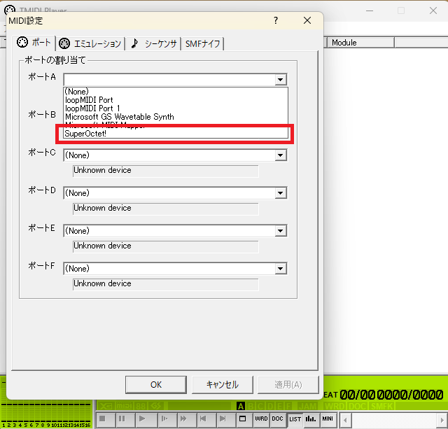
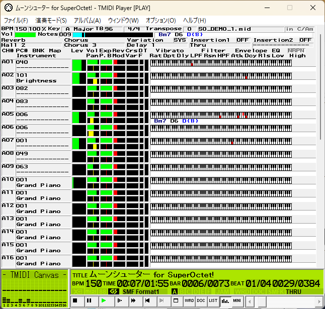

PCで使う
この項ではPCで本音源を使用する手順について記述します。
MIDIシーケンサのDominoとプレーヤーのTMIDI Playerでの使用手順それぞれを記述します。
以前の使い方ガイドでPCに接続されており適切に音量設定がされていることが前提です。
警告
本音源はかなり発熱します！
熱破壊の恐れがあるため使用環境にはご注意ください
注意
本音源は複数のアプリケーションから同時に開くことができません！
どうしても同時に使用したい場合は別途loopMIDIやMIDI-OXを組み合わせてください。
なお、この手順については解説しません。
Dominoで使う
Dominoの導入手順については省略します。
-
ダウンロードからDominoの定義ファイルをダウンロードします
-
Dominoを開き、「環境設定」→「MIDI-OUT」を選択します
-
ポートAのデバイスを「SuperOctet!」、音源を「すーぱーおくてっと！」にしてOKを押します
-
適当なノートを置いて音が出ることを確認してください

これでDominoで本音源をお使いいただけます。
TMIDI Playerで使う
TMIDI Playerの導入手順については省略します。
-
「オプション」→「MIDI設定」から設定画面を開きます
-
「ポート」のタブを選択しポートAに「SuperOctet!」を指定しOKを押します
-
あとはお好みのMIDIをドラッグアンドドロップで再生することができます

情報
「エミュレーション」タブの設定はしない方が良いです。
